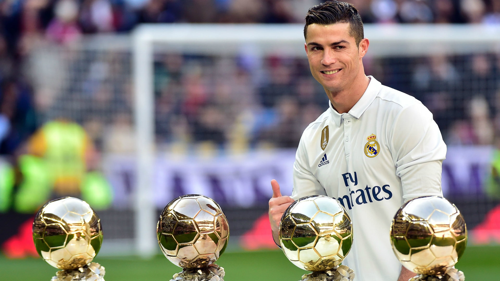

أسطورة كرة القدم العالمية
واحد من أعظم لاعبي كرة القدم على مر التاريخ
ولد كريستيانو رونالدو دوس سانتوس أ فيرو في 5 فبراير 1985 في فونشال، ماديرا، البرتغال. بدأ مسيرته الاحترافية مع سبورتنغ لشبونة قبل أن ينتقل إلى مانشستر يونايتد في عام 2003. بعد ست سنوات ناجحة في إنجلترا، انتقل إلى ريال مدريد في صفقة قياسية في ذلك الوقت. بعد تسع سنوات مع ريال مدريد، انتقل إلى يوفنتوس الإيطالي، ثم عاد إلى مانشستر يونايتد في 2021، وانتقل بعدها إلى النصر السعودي في 2023. يُعرف رونالدو بسرعته، ومهاراته، وقدراته التهديفية الاستثنائية.
